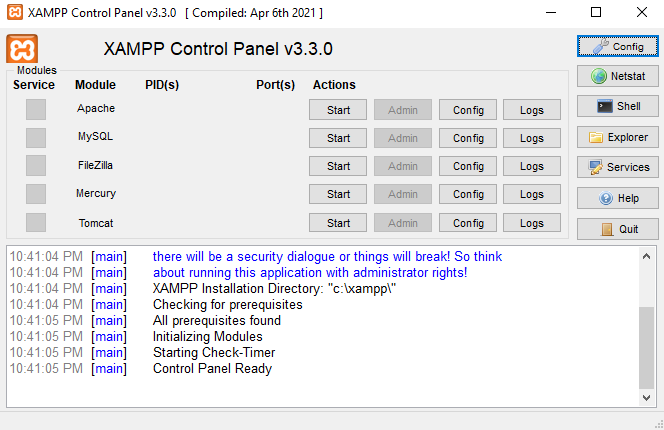
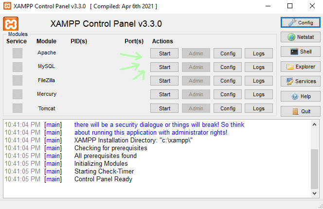
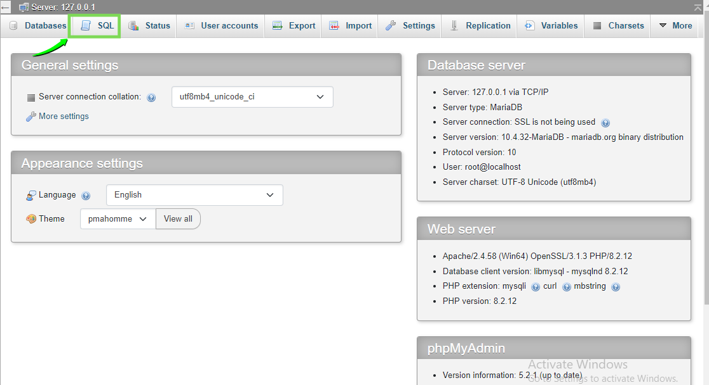
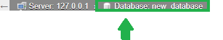
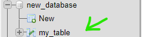
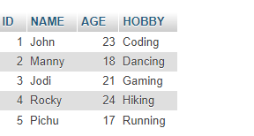
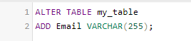

How to use SQL To For CRUD(Creat Read Update Delete) Operation
Last Modified:5 July,2024
Return
To perform CRUD operation in SQL you need an Application Known as Xampp. XAMPP is an open-source software package that provides a local web server environment for testing and
development.For detail info Click here
Few list of Commands used in this tutorial
- CREATE
- ADD
- UPDATE
- DROP
- INSERT INTO
- UPDATE
- ALTER
How to create Database using SQL?
After Installation of Xammp, Open the Xampp Control Pannel

Click Start on Apache and MySQL Serices

Open browser and paste http://localhost/phpmyadmin/ Url
After Opening the Website , To Create DataBase Click on SQL Tab

In SQL Tab Write CREATE DATABASE {name...} and press GO

Your database is added into the Database List
.png)
How to create Table in the database?
After Creation of database Open the database And Reopen the SQL Tab
Make sure you are inside databse not on server when opening the SQL Tab

Write following command in Console and Run it.
CREATE {name of table}
(
ID INT(3),
NAME VARCHAR(255),
AGE INT(3),
HOBBY VARCHAR(255)
);
You have created the table

How to Add Data in Table?
Click on table and SQL Tab
Write Following Command
INSERT INTO table_name (column1, column2, column3, ...)
VALUES (value1, value2, value3, ...);

You have successfully Added data in Table.Inorder to see your table click on browse tab

How to ALter Table ?
Go to the SQL Tab and Write
ALTER TABLE table_name
ADD column_name datatype;
